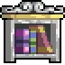

번역 안내. 클래스·스킬·탤런트 이름 등 고유명사는 인게임 검색을 위해 영어 그대로 두었고, 설명만 한글로 옮겼습니다.
이 가이드는 도서관 최대 탤런트 북 레벨과 전반적인 최대 탤런트 레벨의 모든 획득처를 정리합니다. 이 소스들을 모두 해금하면 캐릭터의 탤런트가 현재 라이브러리 최대치(396레벨)에 도달할 수 있으며, 최대 탤런트 레벨 소스까지 합산하면 700레벨 이상까지 올릴 수 있습니다. 이를 통해 Skilling(생산 스킬)이나 전투 능력을 새로운 수준으로 끌어올릴 수 있습니다.
탤런트 북 도서관 최대 레벨 소스
아래 소스들은 World 3의 도서관에서 체크아웃할 수 있는 최대 북 레벨을 높여줍니다. 기본값은 125에서 시작합니다. Automation Arm 업그레이드인 Book Reservation System을 이용하면 20회 체크아웃 후 최대 북 레벨이 보장됩니다. 현재 최대치는 396레벨입니다.

| 소스 | 최대 북 레벨 증가량 |
|---|---|
 World 3 Merit Shop | +10 (레벨당 +2) |
| Salt Lick (Spontaneity Salts) | +20 (레벨당 +2) |
| World 3 업적 – Checkout Takeout | +5 |
| Atom Collider – Oxygen Library Booker | +10 |
| World 5 Sailing Fury Relic | +150 (유물 티어당 +25) |
| World 6 Summoning 승리 보너스 | +76 (기본 +10, 소환 보너스 배율에 따라 증가) |
최대 탤런트 레벨 소스
아래 소스들은 탤런트에 포인트를 1개 이상 투자한 이후 모든 캐릭터의 탤런트에 자동으로 적용됩니다. 대략적인 월드 순서로 정렬되어 있습니다.
| 소스 | 최대 탤런트 레벨 증가량 |
|---|---|
| Pet Companion – Rift Slug | +25 |
| Equinox Valley – Equinox Symbols | 레벨당 +1 (소환 무한 승리로 Equinox 최대 레벨 증가 가능) |
| Symbols of Beyond (상위 클래스) | 탤런트 20레벨당 +1 |
| Elemental Sorcerer 패밀리 보너스 | Elemental Sorcerer 캐릭터 레벨에 따라 달라짐 (레벨 885에서 +14, 레벨 1,118에서 +15) |
| World 5 업적 – Maroon Warship | +1 |
| Kattlekruk 장비 세트 보너스 | +5 |
| Divinity God – Arctis 마이너 링크 보너스 | Divinity 레벨과 Big P 연금술 버블에 따라 증가 |
| Gaming – Super bits (Duper tab): Timmy Talented | 500 이상의 클래스 레벨 100당 +1 |
| Deathbringer Grimoire 업그레이드 – Skull of Major Talent | +30 (레벨당 +1) |
| Arcane Cultist Tesseract 업그레이드 – Arcanist of All Trades III | +5 (레벨당 +1) |
| World 6 Sneaking Mastery 3 | +5 |
| Super Talents – Yellow 1 World 7 Legend Talent | 기본 +50 / Yellow 2 Legend Talent 만렙 시 +100 |
| Zenith Statue 업그레이드 | 추가 레벨 제공 |